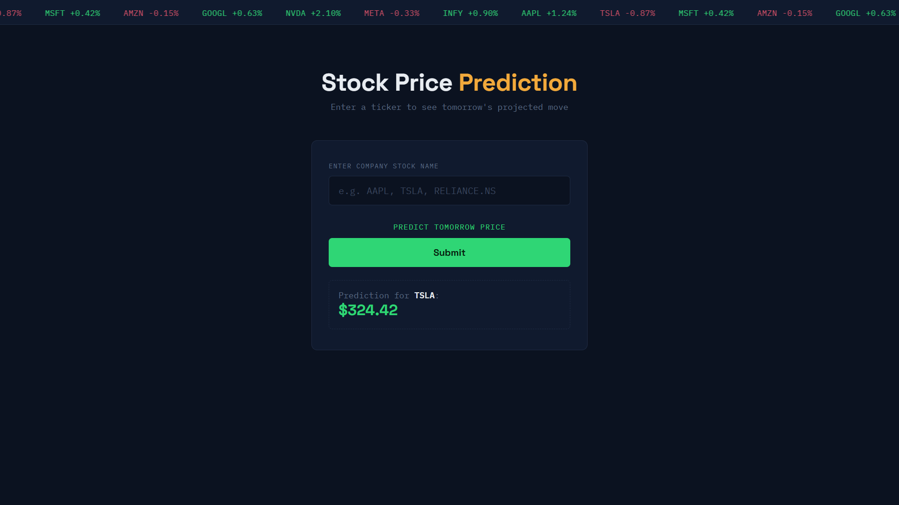
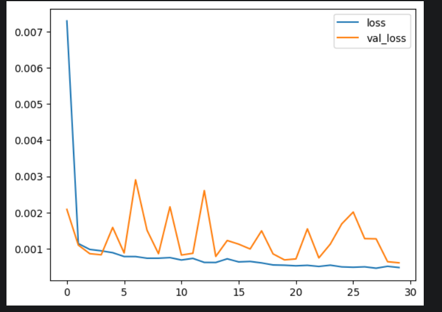
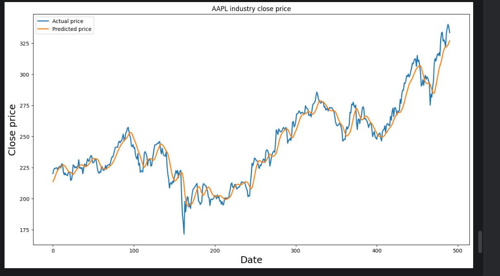

Stock Price Prediction — LSTM
A two-layer LSTM network that predicts a stock's next-day closing price from its last 60 days of historical data, served through a Flask web app that fetches live market data at inference time.
ticker input
→
yfinance fetch
→
60-day window
→
MinMax scale
→
LSTM
→
next-day price
7.82
Test RMSE (AAPL, price units)
30,651
Trainable parameters
60 days
Lookback window
30
Training epochs
Architecture
| Layer | Config | Output |
|---|---|---|
| LSTM | 50 units, return_sequences | (60, 50) |
| Dropout | 20% | (60, 50) |
| LSTM | 50 units | (50,) |
| Dropout | 20% | (50,) |
| Dense | 1 unit | (1,) |
What it does at inference
- Fetches ~6 months of recent data per request — the model itself is fixed, not retrained live
- Applies the exact scaler fitted during training, not a new one
- Chronological 80/20 train-test split, since shuffling would leak future data into training
- Evaluated on RMSE, not accuracy — accuracy is a classification metric and isn't meaningful for this regression task


Limitation worth stating plainly: the model only sees historical closing prices — no news, earnings, or sentiment — so it tracks overall trend well but lags behind sharp, sudden price moves. This is an educational project; predictions here aren't financial advice.